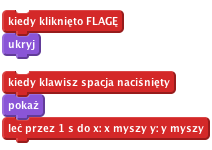
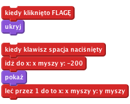
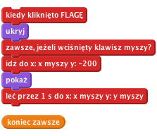
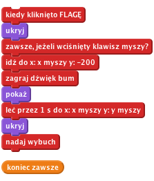
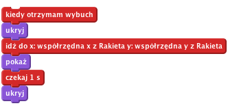
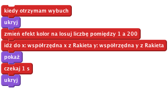
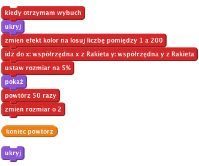
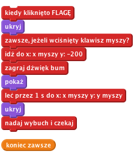

Fajerwerki
Poziom 1
Ta interaktywna zabawka pokazuje wybuchające fajerwerki i odtwarza dźwięk wybuchu przy każdym kliknięciu.
Zaimportujmy wszystkie obrazki potrzebne do gry
Teraz sprawimy, aby po klinięciu rakieta poleciała w kierunku kursora myszki.

Kliknij zieloną flagę, ustaw kursor myszy na Scenie i wciśnij spację.
Czy rakieta pojawia się na ekranie i leci w kierunku kursora myszy?
Co się dzieje, kiedy poruszysz myszą i wciśniesz spację ponownie?

Kliknij zieloną flagę, ustaw kursor myszy na Scenie i wciśnij spację.
Czy rakieta leci w kierunku kursora z samego dołu ekranu?
Co się dzieje, kiedy przesuniesz kursor w bok i wciśniesz spację ponownie?

Kliknij zieloną flagę, a następnie kliknij na scenie. Kliknij jeszcze raz w innym miejscu.
Zapisz swój projekt.
Pierwszym zadaniem dla nas będzię dodanie odgłosu huku tuż przed wylotem rakiety oraz schowanie jej, gdy doleci do celu. Aby zaimportować odgłos wybuchu, przejdź do zakładki „Dźwięki” i wybierz plik „bum” z katalogu Zasoby.

Następnie nadajmy komunikat eksplozji rakiety. Odbierzemy go troszkę później.

Kliknij zieloną flagę.
Upewnij się, że rakieta odtwarza dźwięk i chowa się po osiągnięciu celu.

Wystrzel następną rakietę.
Czy rakieta została zastąpiona obrazkiem wybuchu?
Co się dzieje, kiedy przytrzymasz wciśnięty przycisk myszy i przesuwasz kursor? (Nie martw się, naprawimy ten problem później).
Zapisz swój projekt.

Kliknij zieloną flagę.
Czy każda eksplozja ma inny kolor?
Kliknij zieloną flagę.
Czy każda rakieta wybucha w inny sposób i ma inny kolor?

Kliknij zieloną flagę.
Czy wybuch rakiety powiększa się w miarę upływu czasu?
Spróbuj sprawić, aby każdy wybuch był bardziej unikalny, zmieniając jego rozmiar i szybkość wzrostu każdej eksplozji.
Zapisz swój projekt.
Pamiętasz błąd, który pojawił się wcześniej przy poruszaniu kursora myszy, gdy przycisk myszy jest wciśnięty?
Dzieje się tak z dlatego, że rakieta nadaje komunikat o wybuchu i natychmiast powtarza pętlę „jeżeli”, która z kolei nadaje kolejny komunikat o wybuchu, zanim ten poprzedni skończył się wyświetlać.

Kliknij zieloną flagę, przytrzymaj przycisk myszy i przesuń kursor po ekranie.
Czy obrazek eksplozji pojawia się teraz w odpowiednim miejscu i we właściwym czasie?
Zapisz swój projekt.